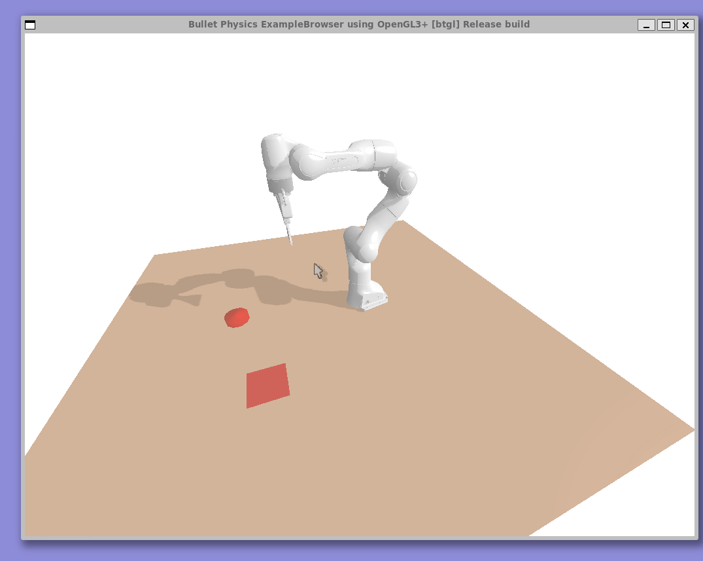

Learning Granular Dynamics using a Graph Neural Network
The manipulation of granular media, such as sand, rice, and coffee, remains a fundamental challenge in robotics. Effective manipulation requires modelling complex dynamics that can express both microscopic physical phenomena at the individual granular level, such as particle packing and friction, and macroscopic material flow and deformation; capturing both with sufficient fidelity while keeping computation tractable is difficult. Current particle-based simulators, such as the Material Point Method (MPM), are primarily used for deformable bodies and viscous fluids, and do not perform well with granular media as they lack accuracy at the granular scale. The fidelity is also highly dependent on the choice of constitutive model and material parameters, limiting generalization across different granular media. Moreover, these simulators are computationally expensive, making them poorly suited for integration into learning pipelines. As a result, no simulator currently offers a general, learning-compatible model of granular behavior for manipulation tasks.
Previous work has proposed learning-based alternatives: the leading method is to train a graph neural network (GNN) on MPM simulations, then utilize the cheaper surrogate dynamics model to generate training data for learning manipulation policies. However, due to the limitations of MPM simulations, there have been significant sim-to-real gaps between simulated and actual dynamics. We propose a GNN pretrained on simulated MPM granular dynamics, followed by a residual model fine-tuned on real-world interaction data to close the sim-to-real gap. Our network learns a surface-to-surface transition model that predicts how the material surface configuration evolves in response to a manipulator path, implicitly capturing bulk granular behavior without the added computational complexity of full particle simulation. This approach aims to combine the generality and tractability of learned dynamics models with the accuracy of real-world correction, offering a scalable path toward robotic manipulation of granular media.
Initial Trajectory Generation for a "Pushing" Motion

Taichi MPM Simulations